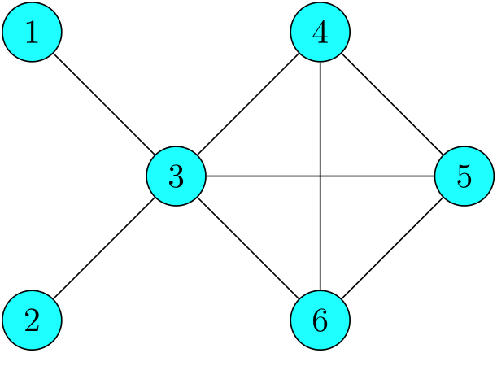

Problem Set 6 Solutions
Problem 1: Consider a random walk on the graph in Figure 1. Assume that all edges initially have weight 1.
-
Find the invariant distribution for this chain.
-
Suppose that a random walker starts at node 3. Compute the probability that she immediately transitions from \(3\) to \(4\) to \(5\) to \(6\) then back to \(3\text{.}\)
-
Compute the long-run proportion of time steps on which she transitions from an odd-numbered state to another odd-numbered state.
-
Argue that \(\lim_{n\rightarrow\infty}P_{15}^n\) exists for this chain, and compute its value.
-
Suppose now that the walk on the graph is modified so that two edges have different weights: Set \(\omega_{34} = 2\) and \(\omega_{56} = 3\text{.}\) Compute the expected number of steps it takes to return to state 3 once the walker enters 3.

Solution:
-
There are no self edges, and there are a total of 8 edges between distinct vertices. So, \(t = \sum_{i,j\in S}\omega_{ij} = 2\cdot 8 = 16\) and\begin{equation*} \pi_i = \frac{\degree(i)}{t} = \frac{\text{number of neighbors of $i$}}{16}. \end{equation*}We compute\begin{equation*} \pi_1 = \frac{1}{16},\ \pi_2 = \frac{1}{16},\ \pi_3 = \frac{5}{16},\ \pi_4 = \frac{3}{16},\ \pi_5 = \frac{3}{16},\ \pi_6 = \frac{3}{16}. \end{equation*}
-
The walker is equally likely to walk along any edge attached to its current vertex. So, we are looking for\begin{equation*} P_{34}P_{45}P_{56}P_{63} = \frac{1}{5}\cdot\frac{1}{3}\cdot\frac{1}{3}\cdot\frac{1}{3} \end{equation*}
-
The edges between nodes that both have odd labels are \((1,3)\) and \((3,5)\text{.}\) So, the transitions that we’re looking for are: \(1\rightarrow3,\ 3\rightarrow 1,\ 3\rightarrow 5,\ \) and \(5\rightarrow 3\text{.}\) The long-run probability of any one of these happening is\begin{equation*} \begin{aligned} \pi_1P_{13} + \pi_3(P_{31} + P_{35}) + \pi_5P_{53} &= \frac{1}{16}\cdot1 + \frac{5}{16}\cdot\left(\frac{1}{5} + \frac{1}{5}\right) + \frac{3}{16}\cdot\frac{1}{3}\\ &= \frac{1 + 2 + 1}{16} = \frac{1}{4}. \end{aligned} \end{equation*}
-
This finite graph is connected, so it is irreducible. There is a cycle of length 3 by going \(3\rightarrow 4\rightarrow 5\rightarrow 3\text{,}\) so it is aperiodic. Our convergence theorem says that \(\lim_{n\rightarrow\infty} P^n_{15}\) exists and equals \(\pi_5 = 3/16.\)
-
We now compute\begin{equation*} t =\sum_{i,j\in S}\omega_{ij} = 2\cdot 6 + 2\cdot \omega_{34} + 2\cdot\omega_{56} = 12+4+6 = 22. \end{equation*}Now, we get\begin{equation*} \pi_3 = \frac{\sum_{j\in S}\omega_{3j}}{t} = \frac{1 + 1 + 1 + 1 + 2}{22} = \frac{6}{22} = \frac{3}{11}. \end{equation*}The answer is just\begin{equation*} \frac{1}{\pi_3} = \frac{11}{3}. \end{equation*}
Problem 2: Let \(p\in(0,1)\text{.}\) Although the simple random walk on \(\mathbb{Z}\) is not positive recurrent, a similar walk that "drifts" towards a partially reflecting boundary is not only positive recurrent but also reversible.
-
\begin{equation*} P = \begin{bmatrix} 1-p & p & 0\\ 1-p & 0 & p\\ 0 & 1-p & p \end{bmatrix}. \end{equation*}This is a walk with two partially reflecting boundaries at \(0\) and \(2\text{.}\) Compute the invariant distribution for this chain and show that it is reversible. Hint: Take a good look at the equations that come from the defining property of the invariant distribution.
-
A similar analysis to that of (a) shows that the analog of the above walk with \(S = \{0,1,2,\ldots,N\}\) and with boundaries at \(0\) and \(N\) is also reversible. Now, let \(S = \{0,1,2,3,\ldots\}\) and consider the Markov chain on \(S\) with the following transition matrix\begin{equation*} P = \begin{bmatrix} 1-p & p & 0 & 0 & \dots\\ 1-p & 0 & p & 0 & \dots\\ 0 & 1-p & 0 & p & \dots\\ 0 & 0 & 1-p & 0 & \dots\\ \vdots & \vdots & \vdots & \vdots & \ddots \end{bmatrix} \end{equation*}that has \(1-p\) in each entry directly below the diagonal, \(p\) in each entry directly above the diagonal, and \(0\) in all other entries not shown. Find the values of \(p\) for which this chain has a reversible distribution and compute it.Hint: Assume \(\pi = [\pi_1,\pi_2,\ldots]\) is some distribution that satisfies the detailed balance equations and use these equations to solve for \(\pi_i\) in terms of \(\pi_0\text{.}\) When can these equations have a solution?
Solution:
-
\begin{equation*} \begin{array}{rrrrrrr} (1-p)\pi_0 &+& (1-p)\pi_1 &+& &=& \pi_0 \\ p\pi_0 &+& &+& (1-p)\pi_2 &=& \pi_1\\ && p\pi_1 &+& p\pi_2 &=& \pi_2\\ \pi_0 &+& \pi_1 &+& \pi_2 &=& 1 \end{array} \end{equation*}Rearranging the first and third equations give\begin{equation*} p\pi_0 = (1-p)\pi_1 \end{equation*}and\begin{equation*} p\pi_1 = (1-p)\pi_2, \end{equation*}which are actually the same as\begin{equation*} \pi_0P_{01} = \pi_1 P_{10} \end{equation*}and\begin{equation*} \pi_1P_{12} = \pi_2P_{21} \end{equation*}using the fact that \(P_{01}=P_{12} = p\) and \(P_{21} = P_{10} = 1-p\text{.}\) These are exactly the two nontrivial detailed balance equations (The other equations are either \(\pi_0P_{02} = \pi_2P_{20} = 0\) or are between a state \(i\) and itself and reduce to \(\pi_iP_{ii} = \pi_iP_{ii}\text{.}\)). This shows \(\pi\) is reversible. To compute it, notice that rearranging the detailed balance equations to solve for \(\pi_1\) and \(\pi_2\) in terms of \(\pi_0\) gives \(\pi_1 = \frac{p}{1-p}\pi_0\) and \(\pi_2 = \frac{p}{1-p}\pi_1 = \left(\frac{p}{1-p}\right)^2\pi_0\text{.}\) Plugging these into the final equation, we get\begin{equation*} \pi_0\left(1 + \frac{p}{1-p} + \left(\frac{p}{1-p}\right)^2\right) = 1 \end{equation*}meaning\begin{equation*} \pi = \frac{1}{1 + \frac{p}{1-p} + \left(\frac{p}{1-p}\right)^2}\left[1, \frac{p}{1-p}, \left(\frac{p}{1-p}\right)^2\right]. \end{equation*}
-
Suppose that \(\pi\) satisfies the detailed balance equations and \(\sum_{i=0}^\infty \pi_i = 1\text{.}\) For this chain, the nontrivial detailed balance equations are\begin{equation*} \pi_iP_{i,i+1} = \pi_{i+1}P_{i+1,i} \iff \pi_{i+1} = \frac{p}{1-p}\pi_{i} \end{equation*}for all \(i\in \{0,1,2,\ldots\}\text{.}\) Iterating these equations, we can write \(\pi_i\) in terms of \(\pi_0\) as\begin{equation*} \pi_i = \left(\frac{p}{1-p}\right)^i\pi_0. \end{equation*}Using the fact that \(\sum_{i=0}^\infty\pi_i = 1\text{,}\) we get\begin{equation*} \pi_0 + \frac{p}{1-p}\pi_0 + \left(\frac{p}{1-p}\right)^2\pi_0 + \cdots = \pi_0\sum_{i=0}^\infty\left(\frac{p}{1-p}\right)^i = 1 \end{equation*}The geometric series above converges exactly when \(\frac{p}{1-p} {\lt} 1\text{,}\) which happens when \(p {\lt} 1/2\text{.}\) This shows there is no reversible distribution when \(p \geq 1/2\text{.}\)Assuming \(p {\lt} 1/2\text{,}\) we get can sum the geometric series to get\begin{equation*} 1 = \pi_0\left(\frac{1}{1-\frac{p}{1-p}}\right) = \pi_0\frac{1-p}{1-p-p} \end{equation*}so that\begin{equation*} \pi_0 = \frac{1-p-p}{1-p} =1 - \frac{p}{1-p} \end{equation*}and so,\begin{equation*} \pi_i = \left(\frac{p}{1-p}\right)^i\pi_0 = \left(\frac{p}{1-p}\right)^i\left(1-\frac{p}{1-p}\right) \end{equation*}for all \(i\in\{0,1,2,\ldots\}\) is a solution to the detailed balance equations, hence is reversible. Notice that this is \(\geom(1-p/(1-p)) - 1\text{!}\)